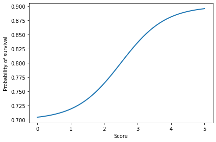
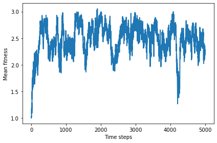
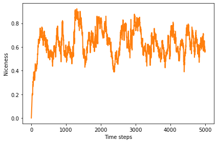
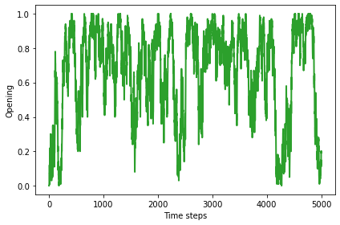
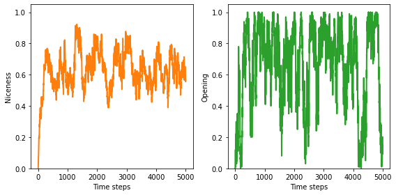
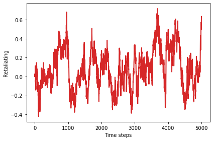
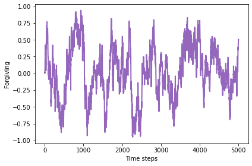

12. Evolution of cooperation#
Code examples from Think Complexity, 2nd edition.
Copyright 2016 Allen Downey, MIT License
import matplotlib.pyplot as plt
import numpy as np
Show code cell content
from os.path import basename, exists
def download(url):
filename = basename(url)
if not exists(filename):
from urllib.request import urlretrieve
local, _ = urlretrieve(url, filename)
print('Downloaded ' + local)
download('https://github.com/AllenDowney/ThinkComplexity2/raw/master/notebooks/utils.py')
from utils import decorate, savefig
# make a directory for figures
!mkdir -p figs
12.1. Chapter 11 code#
From the Chapter 11 notebook, we will reuse Simulation and Instrument.
class Simulation:
def __init__(self, fit_land, agents):
"""Create the simulation:
fit_land: fit_land
num_agents: int number of agents
agent_maker: function that makes agents
"""
self.fit_land = fit_land
self.agents = np.asarray(agents)
self.instruments = []
def add_instrument(self, instrument):
"""Adds an instrument to the list.
instrument: Instrument object
"""
self.instruments.append(instrument)
def plot(self, index, *args, **kwargs):
"""Plot the results from the indicated instrument.
"""
self.instruments[index].plot(*args, **kwargs)
def run(self, num_steps=500):
"""Run the given number of steps.
num_steps: integer
"""
# initialize any instruments before starting
self.update_instruments()
for _ in range(num_steps):
self.step()
def step(self):
"""Simulate a time step and update the instruments.
"""
n = len(self.agents)
fits = self.get_fitnesses()
# see who dies
index_dead = self.choose_dead(fits)
num_dead = len(index_dead)
# replace the dead with copies of the living
replacements = self.choose_replacements(num_dead, fits)
self.agents[index_dead] = replacements
# update any instruments
self.update_instruments()
def update_instruments(self):
for instrument in self.instruments:
instrument.update(self)
def get_locs(self):
"""Returns a list of agent locations."""
return [tuple(agent.loc) for agent in self.agents]
def get_fitnesses(self):
"""Returns an array of agent fitnesses."""
fits = [agent.fitness for agent in self.agents]
return np.array(fits)
def choose_dead(self, ps):
"""Choose which agents die in the next timestep.
ps: probability of survival for each agent
returns: indices of the chosen ones
"""
n = len(self.agents)
is_dead = np.random.random(n) < 0.1
index_dead = np.nonzero(is_dead)[0]
return index_dead
def choose_replacements(self, n, weights):
"""Choose which agents reproduce in the next timestep.
n: number of choices
weights: array of weights
returns: sequence of Agent objects
"""
agents = np.random.choice(self.agents, size=n, replace=True)
replacements = [agent.copy() for agent in agents]
return replacements
class Instrument:
"""Computes a metric at each timestep."""
def __init__(self):
self.metrics = []
def update(self, sim):
"""Compute the current metric.
Appends to self.metrics.
sim: Simulation object
"""
# child classes should implement this method
pass
def plot(self, **options):
plt.plot(self.metrics, **options)
class MeanFitness(Instrument):
"""Computes mean fitness at each timestep."""
label = 'Mean fitness'
def update(self, sim):
mean = np.nanmean(sim.get_fitnesses())
self.metrics.append(mean)
12.2. PD Agent#
The Agent class defines a strategy for iterated prisoner’s dilemma.
The genome of a Prisoner’s Dilemma-playing agent is a map from the previous choices of the opponent to the agent’s next choice.
class Agent:
keys = [(None, None),
(None, 'C'),
(None, 'D'),
('C', 'C'),
('C', 'D'),
('D', 'C'),
('D', 'D')]
def __init__(self, values, fitness=np.nan):
"""Initialize the agent.
values: sequence of 'C' and 'D'
"""
self.values = values
self.responses = dict(zip(self.keys, values))
self.fitness = fitness
def reset(self):
"""Reset variables before a sequence of games.
"""
self.hist = [None, None]
self.score = 0
def past_responses(self, num=2):
"""Select the given number of most recent responses.
num: integer number of responses
returns: sequence of 'C' and 'D'
"""
return tuple(self.hist[-num:])
def respond(self, other):
"""Choose a response based on the opponent's recent responses.
other: Agent
returns: 'C' or 'D'
"""
key = other.past_responses()
resp = self.responses[key]
return resp
def append(self, resp, pay):
"""Update based on the last response and payoff.
resp: 'C' or 'D'
pay: number
"""
self.hist.append(resp)
self.score += pay
def copy(self, prob_mutate=0.05):
"""Make a copy of this agent.
"""
if np.random.random() > prob_mutate:
values = self.values
else:
values = self.mutate()
return Agent(values, self.fitness)
def mutate(self):
"""Makes a copy of this agent's values, with one mutation.
returns: sequence of 'C' and 'D'
"""
values = list(self.values)
index = np.random.choice(len(values))
values[index] = 'C' if values[index] == 'D' else 'D'
return values
Here’s the genome for “always cooperate”
all_c = Agent('CCCCCCC')
all_c.responses
{(None, None): 'C',
(None, 'C'): 'C',
(None, 'D'): 'C',
('C', 'C'): 'C',
('C', 'D'): 'C',
('D', 'C'): 'C',
('D', 'D'): 'C'}
And for “always defect”
all_d = Agent('DDDDDDD')
all_d.responses
{(None, None): 'D',
(None, 'C'): 'D',
(None, 'D'): 'D',
('C', 'C'): 'D',
('C', 'D'): 'D',
('D', 'C'): 'D',
('D', 'D'): 'D'}
And for “tit for tat”
tft = Agent('CCDCDCD')
tft.responses
{(None, None): 'C',
(None, 'C'): 'C',
(None, 'D'): 'D',
('C', 'C'): 'C',
('C', 'D'): 'D',
('D', 'C'): 'C',
('D', 'D'): 'D'}
The copy method has some probability of generating a mutation (in this example, values is initially a string; after mutation, it’s a NumPy array of letters).
np.random.seed(17)
for i in range(10):
print(all_d.copy().values)
DDDDDDD
DDDDDDD
DDDDDDD
DDDDDDD
DDDDDDD
DDDDDDD
DDDDDDD
DDDDDDD
['D', 'C', 'D', 'D', 'D', 'D', 'D']
['D', 'D', 'C', 'D', 'D', 'D', 'D']
The following cell makes 1000 copies and counts how many of them are mutants.
np.sum([all_d.copy().values != all_d.values for i in range(1000)])
57
12.3. The Tournament#
Tournament encapsulates the rules for the tournament.
class Tournament:
payoffs = {('C', 'C'): (3, 3),
('C', 'D'): (0, 5),
('D', 'C'): (5, 0),
('D', 'D'): (1, 1)}
num_rounds = 6
def play(self, agent1, agent2):
"""Play a sequence of iterated PD rounds.
agent1: Agent
agent2: Agent
returns: tuple of agent1's score, agent2's score
"""
agent1.reset()
agent2.reset()
for i in range(self.num_rounds):
resp1 = agent1.respond(agent2)
resp2 = agent2.respond(agent1)
pay1, pay2 = self.payoffs[resp1, resp2]
agent1.append(resp1, pay1)
agent2.append(resp2, pay2)
return agent1.score, agent2.score
def melee(self, agents, randomize=True):
"""Play each agent against two others.
Assigns the average score from the two games to agent.fitness
agents: sequence of Agents
randomize: boolean, whether to shuffle the agents
"""
if randomize:
agents = np.random.permutation(agents)
n = len(agents)
i_row = np.arange(n)
j_row = (i_row + 1) % n
totals = np.zeros(n)
for i, j in zip(i_row, j_row):
agent1, agent2 = agents[i], agents[j]
score1, score2 = self.play(agent1, agent2)
totals[i] += score1
totals[j] += score2
for i in i_row:
agents[i].fitness = totals[i] / self.num_rounds / 2
We can test Tournament with a few known scenarios.
tour = Tournament()
tour.play(all_d, all_c)
(30, 0)
tour.play(all_d, tft)
(10, 5)
tour.play(tft, all_c)
(18, 18)
And then test melee with a list of three agents.
agents = [all_c, all_d, tft]
agents
[<__main__.Agent at 0x7f3f46fb95d0>,
<__main__.Agent at 0x7f3f46f30fd0>,
<__main__.Agent at 0x7f3f46f30ad0>]
tour.melee(agents)
In this population, “always defect” does best.
for agent in agents:
print(agent.values, agent.fitness)
CCCCCCC 1.5
DDDDDDD 3.3333333333333335
CCDCDCD 1.9166666666666667
12.4. Probability of survival#
We need a function to map from points per round (0 to 5) to probability of survival (0 to 1). I’ll use a logistic curve.
def logistic(x, A=0, B=1, C=1, M=0, K=1, Q=1, nu=1):
"""Computes the generalize logistic function.
A: controls the lower bound
B: controls the steepness of the transition
C: not all that useful, AFAIK
M: controls the location of the transition
K: controls the upper bound
Q: shift the transition left or right
nu: affects the symmetry of the transition
returns: float or array
"""
exponent = -B * (x - M)
denom = C + Q * np.exp(exponent)
return A + (K-A) / denom ** (1/nu)
def prob_survive(scores):
"""Probability of survival, based on fitness.
scores: sequence of scores, 0-60
returns: probability
"""
return logistic(scores, A=0.7, B=1.5, M=2.5, K=0.9)
scores = np.linspace(0, 5)
probs = prob_survive(scores)
plt.plot(scores, probs)
decorate(xlabel='Score', ylabel='Probability of survival')

12.5. The simulator#
The biggest change in the simulator is in step, which runs melee to determine the fitness of each agent, and prob_survive to map from fitness to probability of surviving.
class PDSimulation(Simulation):
def __init__(self, tournament, agents):
"""Create the simulation:
tournament: Tournament object
agents: sequence of agents
"""
self.tournament = tournament
self.agents = np.asarray(agents)
self.instruments = []
def step(self):
"""Simulate a time step and update the instruments.
"""
self.tournament.melee(self.agents)
Simulation.step(self)
def choose_dead(self, fits):
"""Choose which agents die in the next timestep.
fits: fitness of each agent
returns: indices of the chosen ones
"""
ps = prob_survive(fits)
n = len(self.agents)
is_dead = np.random.random(n) < ps
index_dead = np.nonzero(is_dead)[0]
return index_dead
We might want to start with random agents.
def make_random_agents(n):
"""Make agents with random genotype.
n: number of agents
returns: sequence of agents
"""
agents = [Agent(np.random.choice(['C', 'D'], size=7))
for _ in range(n)]
return agents
Or with all identical agents.
def make_identical_agents(n, values):
"""Make agents with the given genotype.
n: number of agents
values: sequence of 'C' and 'D'
returns: sequence of agents
"""
agents = [Agent(values) for _ in range(n)]
return agents
Here are the instruments to compute various metrics.
Niceness is the average number of C across the genotypes in the population.
class Niceness(Instrument):
"""Fraction of cooperation in all genotypes."""
label = 'Niceness'
def update(self, sim):
responses = np.array([agent.values for agent in sim.agents])
metric = np.mean(responses == 'C')
self.metrics.append(metric)
Opening is the fraction of agents that cooperate in the first round.
class Opening(Instrument):
"""Fraction of agents that cooperate on the first round."""
label = 'Opening'
def update(self, sim):
responses = np.array([agent.values[0] for agent in sim.agents])
metric = np.mean(responses == 'C')
self.metrics.append(metric)
Retaliating is the difference between (1) the fraction of agents that defect after the opponent defects and (2) the fraction of agents that defect after the opponent cooperates.
class Retaliating(Instrument):
"""Tendency to defect after opponent defects."""
label = 'Retaliating'
def update(self, sim):
after_d = np.array([agent.values[2::2] for agent in sim.agents])
after_c = np.array([agent.values[1::2] for agent in sim.agents])
metric = np.mean(after_d == 'D') - np.mean(after_c == 'D')
self.metrics.append(metric)
Forgiving is the difference between the number of agents that cooperate after DC minus the number that cooperate after CD.
class Forgiving(Instrument):
"""Tendency to cooperate if opponent cooperates after defecting."""
label = 'Forgiving'
def update(self, sim):
after_dc = np.array([agent.values[5] for agent in sim.agents])
after_cd = np.array([agent.values[4] for agent in sim.agents])
metric = np.mean(after_dc == 'C') - np.mean(after_cd == 'C')
self.metrics.append(metric)
Here’s another metric intended to measure forgiveness.
class Forgiving2(Instrument):
"""Ability to cooperate after the first two rounds."""
label = 'Forgiving2'
def update(self, sim):
after_two = np.array([agent.values[3:] for agent in sim.agents])
metric = np.mean(np.any(after_two=='C', axis=1))
self.metrics.append(metric)
12.6. Results#
Here’s a simulation that starts with 100 defectors and runs 5000 timesteps.
tour = Tournament()
agents = make_identical_agents(100, list('DDDDDDD'))
sim = PDSimulation(tour, agents)
sim.add_instrument(MeanFitness())
sim.add_instrument(Niceness())
sim.add_instrument(Opening())
sim.add_instrument(Retaliating())
sim.add_instrument(Forgiving())
Run the simulation. If you get a warning about Mean of empty slice, that’s ok.
np.random.seed(17)
sim.run(5000)
/home/downey/anaconda3/envs/ThinkComplexity2/lib/python3.7/site-packages/ipykernel_launcher.py:6: RuntimeWarning: Mean of empty slice
And let’s look at some results.
def plot_result(index, **options):
"""Plots the results of the indicated instrument.
index: integer
"""
sim.plot(index, **options)
instrument = sim.instruments[index]
print(np.mean(instrument.metrics[1000:]))
decorate(xlabel='Time steps',
ylabel=instrument.label)
Initially, mean fitness is 1, because that’s the number of points each defector gets per round when facing another defector.
After a few hundred steps, mean fitness climbs to a steady state near 2.5, although it oscillates around this point substantially.
In a world of all cooperators, mean fitness would be 3, so this steady state is hardly utopia, but it’s not that far off.
plot_result(0, color='C0')
savefig('figs/chap12-1')
2.5006129717570604
Saving figure to file figs/chap12-1

The average number of C’s, across all agents and all locations in the genome, is generally more than half, with a long range mean above 0.6.
plot_result(1, color='C1')
0.6453083157781982

The results are similar for the opening move: the fraction of agents who start out cooperating is generally more than half, with a long-range mean above 0.6. This fraction varies widely in time.
plot_result(2, color='C2')
0.67127968007998

plt.figure(figsize=(8,4))
plt.subplot(1,2,1)
plot_result(1, color='C1')
decorate(ylim=[0, 1.05])
plt.subplot(1,2,2)
plot_result(2, color='C2')
decorate(ylim=[0, 1.05])
savefig('figs/chap12-2')
0.6453083157781982
0.67127968007998
Saving figure to file figs/chap12-2

There might be a weak inclination toward retaliation, with slightly more defections after the opponent defects.
plot_result(3, color='C3')
0.07278680329917521

All of the strategies are forgiving in the sense that they have a short memory, so most of them are capable of cooperating at some point after an opponent has defected. But there is no evidence that they are specifically more likely to forgive a defection from two rounds ago, compared to a defection in the previous round.
plot_result(4, color='C4')
-0.009162709322669325

The following cells explore the composition of the final population. But because the distribution of agents varies so much over time, the details of a single timestep might not mean much.
Here are the final genomes:
for agent in sim.agents:
print(agent.values)
['D', 'C', 'D', 'C', 'C', 'C', 'C']
['D', 'C', 'D', 'C', 'D', 'C', 'D']
['C', 'C', 'D', 'C', 'C', 'C', 'D']
['D', 'C', 'D', 'C', 'D', 'C', 'D']
['D', 'C', 'D', 'C', 'D', 'C', 'D']
['D', 'D', 'D', 'C', 'D', 'C', 'D']
['D', 'C', 'D', 'C', 'C', 'C', 'C']
['D', 'C', 'D', 'C', 'C', 'C', 'D']
['D', 'D', 'D', 'C', 'D', 'C', 'D']
['D', 'C', 'D', 'C', 'D', 'C', 'C']
['D', 'C', 'D', 'D', 'C', 'C', 'C']
['C', 'C', 'D', 'C', 'C', 'C', 'D']
['D', 'C', 'D', 'C', 'C', 'C', 'D']
['C', 'C', 'D', 'C', 'C', 'C', 'D']
['D', 'C', 'D', 'C', 'D', 'C', 'C']
['D', 'C', 'D', 'C', 'C', 'C', 'D']
['C', 'C', 'D', 'C', 'C', 'C', 'D']
['C', 'C', 'D', 'C', 'C', 'C', 'D']
['D', 'C', 'D', 'C', 'D', 'C', 'C']
['D', 'C', 'D', 'C', 'D', 'C', 'C']
['D', 'C', 'C', 'C', 'D', 'C', 'D']
['D', 'C', 'C', 'C', 'D', 'C', 'D']
['D', 'C', 'D', 'C', 'D', 'C', 'D']
['D', 'C', 'D', 'C', 'C', 'C', 'D']
['D', 'C', 'D', 'C', 'C', 'C', 'D']
['D', 'C', 'D', 'C', 'D', 'C', 'D']
['C', 'C', 'D', 'C', 'D', 'C', 'C']
['D', 'C', 'D', 'C', 'D', 'C', 'D']
['D', 'C', 'C', 'C', 'D', 'C', 'D']
['D', 'C', 'D', 'C', 'D', 'C', 'D']
['D', 'C', 'D', 'C', 'D', 'C', 'D']
['D', 'C', 'C', 'C', 'D', 'C', 'D']
['C', 'C', 'D', 'C', 'C', 'C', 'D']
['D', 'C', 'C', 'C', 'D', 'C', 'D']
['C', 'C', 'D', 'C', 'D', 'C', 'C']
['D', 'C', 'D', 'C', 'C', 'C', 'D']
['D', 'C', 'D', 'C', 'C', 'C', 'D']
['D', 'D', 'D', 'C', 'D', 'C', 'C']
['D', 'D', 'D', 'C', 'D', 'C', 'D']
['C', 'C', 'D', 'C', 'D', 'C', 'C']
['C', 'C', 'D', 'D', 'C', 'C', 'D']
['D', 'C', 'D', 'C', 'C', 'C', 'C']
['D', 'C', 'D', 'C', 'C', 'C', 'D']
['D', 'C', 'D', 'C', 'C', 'C', 'D']
['D', 'C', 'D', 'C', 'D', 'C', 'C']
['D', 'C', 'D', 'C', 'D', 'C', 'D']
['D', 'C', 'D', 'C', 'C', 'C', 'D']
['D', 'C', 'D', 'C', 'D', 'C', 'D']
['D', 'C', 'D', 'C', 'C', 'C', 'C']
['D', 'C', 'D', 'C', 'C', 'C', 'C']
['C', 'C', 'D', 'D', 'C', 'C', 'D']
['D', 'C', 'D', 'C', 'D', 'C', 'D']
['D', 'C', 'C', 'C', 'D', 'C', 'D']
['D', 'C', 'D', 'C', 'C', 'C', 'D']
['D', 'C', 'C', 'C', 'D', 'C', 'C']
['D', 'D', 'D', 'C', 'D', 'C', 'D']
['D', 'D', 'C', 'C', 'C', 'D', 'C']
['C', 'C', 'D', 'C', 'C', 'C', 'D']
['D', 'C', 'D', 'C', 'D', 'C', 'D']
['D', 'C', 'D', 'C', 'D', 'C', 'D']
['D', 'C', 'D', 'C', 'D', 'C', 'D']
['D', 'C', 'D', 'C', 'D', 'C', 'D']
['C', 'C', 'D', 'C', 'C', 'C', 'D']
['D', 'C', 'D', 'C', 'C', 'C', 'C']
['D', 'C', 'D', 'C', 'C', 'C', 'D']
['D', 'C', 'D', 'C', 'D', 'C', 'C']
['D', 'C', 'D', 'D', 'C', 'C', 'C']
['D', 'D', 'C', 'C', 'C', 'C', 'D']
['D', 'C', 'D', 'C', 'C', 'C', 'C']
['D', 'C', 'D', 'C', 'C', 'C', 'D']
['D', 'C', 'D', 'C', 'C', 'C', 'D']
['D', 'C', 'D', 'C', 'D', 'C', 'D']
['C', 'C', 'D', 'C', 'C', 'C', 'D']
['D', 'C', 'D', 'C', 'C', 'C', 'C']
['D', 'D', 'D', 'C', 'D', 'C', 'D']
['D', 'C', 'D', 'C', 'C', 'C', 'D']
['C', 'C', 'D', 'C', 'D', 'C', 'C']
['D', 'C', 'C', 'C', 'D', 'C', 'D']
['D', 'C', 'D', 'C', 'C', 'C', 'C']
['D', 'D', 'C', 'C', 'C', 'D', 'C']
['D', 'C', 'D', 'C', 'D', 'C', 'D']
['D', 'C', 'D', 'C', 'D', 'C', 'D']
['C', 'C', 'D', 'C', 'C', 'C', 'D']
['D', 'C', 'D', 'D', 'C', 'C', 'C']
['D', 'C', 'D', 'C', 'C', 'C', 'D']
['C', 'C', 'D', 'C', 'D', 'C', 'C']
['C', 'C', 'D', 'C', 'D', 'C', 'C']
['D', 'C', 'D', 'C', 'C', 'C', 'D']
['D', 'C', 'D', 'C', 'D', 'C', 'C']
['D', 'C', 'C', 'C', 'D', 'C', 'D']
['D', 'C', 'C', 'C', 'D', 'C', 'D']
['D', 'C', 'D', 'C', 'D', 'C', 'D']
['C', 'C', 'C', 'C', 'D', 'C', 'D']
['D', 'C', 'D', 'C', 'D', 'C', 'D']
['C', 'C', 'D', 'C', 'D', 'C', 'C']
['D', 'C', 'D', 'C', 'C', 'C', 'D']
['D', 'C', 'D', 'C', 'C', 'C', 'D']
['D', 'D', 'D', 'C', 'D', 'C', 'D']
['D', 'C', 'D', 'C', 'C', 'C', 'C']
['D', 'C', 'D', 'C', 'C', 'C', 'D']
And here are the most common genomes:
from pandas import Series
responses = [''.join(agent.values) for agent in sim.agents]
Series(responses).value_counts()
DCDCDCD 20
DCDCCCD 20
DCDCCCC 10
CCDCCCD 10
DCCCDCD 9
DCDCDCC 7
CCDCDCC 7
DDDCDCD 6
DCDDCCC 3
CCDDCCD 2
DDCCCDC 2
DDDCDCC 1
DCCCDCC 1
DDCCCCD 1
CCCCDCD 1
dtype: int64
Exercise: The simulation in this notebook depends on a number of conditions and parameters I chose arbitrarily. As an exercise, I encourage you to explore other conditions to see what effect they have on the results. Here are some suggestions:
Vary the initial conditions: instead of starting with all defectors, see what happens if you start with all cooperators, all TFT, or random agents.
In
Tournament.melee, I shuffle the agents at the beginning of each time step, so each agent plays against two randomly-chosen agents. What happens if you don’t shuffle? In that case, each agent would play against the same neighbors repeatedly. That might make it easier for a minority strategy to invade a majority, by taking advantage of locality.Since each agent only plays against two other agents, the outcome of each round is highly variable: an agent that would do well against most other agents might get unlucky during any given round, or the other way around. What happens if you increase the number of opponents each agent plays against during each round? Or what if an agent’s fitness at the end of each step is the average of its current score and its fitness at the end of the previous round?
The function I chose for
prob_survivalvaries from 0.7 to 0.9, so the least fit agent, withp=0.7, lives for3.33timesteps, on average, and the most fit agent lives for10timesteps. What happens if you makeprob_survivalmore or less “aggressive”.I chose
num_rounds=6so that each element of the genome has roughly the same impact on the outcome of a match. But that is substantially shorter than what Alexrod used in his tournaments. What happens if you increasenum_rounds? Note: if you explore the effect of this parameter, you might also want to create an instrument to measure the niceness of the last 4 elements of the genome, which will be under more selective pressure asnum_roundsincreases.My implementation has differential survival but just random reproduction. What happens if you add differential reproduction?
Exercise: In these simulations, the population never converges to a state where a majority share the same, presumably optimal, genotype. There are two possible explanations for this outcome: one is that there is no optimal strategy, because whenever the population is dominated by a majority genotype, that condition creates an opportunity for a minority to invade; the other possibility is that the mutation rate is high enough to maintain a diversity of genotypes even if the majority is non-optimal. To distinguish between these explanations, try lowering the mutation rate to see what happens. Alternatively, start with a random population and run without mutation until only one genotype survives. Or run with mutation until the system reaches something like a steady state; then turn off mutation and run until there is only one surviving genotype. What are the characteristics of the genotypes that prevail in these conditions?